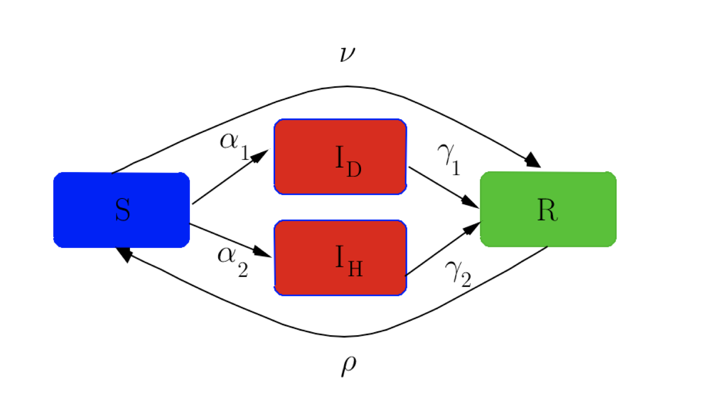

MES comes from a project developed during the semester, of the course unit Industrial Informatics (II). It was developed by me and my colleagues: Francisco Caetano, Francisco Damas, and Tomás Araújo.
It is based on the control and optimization of a flexible production line, which simulates an industrial process, with functions such as the storage of parts, unloading, and transformation of the same. The orders come from a superior actor, an ERP. For instance, these orders could be transformations, unloads, request stores, or even request orders.
The programming language chosen for the MES development and graphical interfaces was JAVA. For the Soft-PLC, the CODESYS platform was used. For storage of the various data, a management system PostgreSQL was used, using an external server of Amazon Webservices, through the platform Heroku.
In addition, the system provides the statistics of various operational components, such as machines and pushers, so users can be aware of the production process and obtain maximum information in real-time. These values can be observed in the graphical interface designed outside the MES, since it communicates only with the database, to not cause additional disturbances. There is yet another interface that works only for system supervision startups.
The speed of the process and the independence of some processes are two of the several special characteristics of the solution presented.
The system developed is robust and it is capable of processing any valid order that arrives, in a correct, safe (even in case of failure of the MES system) and interactive (with the graphical data interface) was implemented, producing good results at the time level.
Considering all the specifications requested by the client, we consider that the best implementation for the project lies in the decentralization of tasks and sufficient independence to improve the response to failures. These concerns meet the industry 4.0 objectives and are requirements with which we should become familiar.
Currently, the existence of automation control systems for production lines is essential. It was the first time, throughout our university experience, that we could deliver functional software, executable on various machines, that a potential customer could use.
If you want to find more information, you can contact me! Also, you can find the code used on my GitHub Repositories: project itself, project's UI and project's REST API .
Aquarium comes from a project developed during the semester, of the course unit Artifical Intelligence (IART). It was developed by me and my colleagues: Afonso Sá and Jorge Soares.
We had two sprints. Firstly, we had to find the game's solution with Heuristic Search Methods for One Player Solitaire Games. For instance, we use BFS, DFS, Uniform Cost, Greedy, and A* Algorithms. Secondly, with the help of Reinforcement Learning algorithms, we create agents that learned and played the game. So, the main goal was to build an agent that is capable of solving the aquarium puzzle. We used Q-Learning, Sarsa, and PPO.
If you want to find more information, you can contact me!
SOCal comes from a final project of the course unit Laboratório de Programação (LPRO). It was developed by me and my colleagues: Gonçalo Santos, Jorge Soares, and José Magalhães. Together we formed the team CALDEV.
This is an android-based sports calendar. With our application, users can: store their events; add a group or be part of one; add a profile; subscribe to worldwide events like Premier League, Formula 1, WRC, among others.
Our target groups are gyms, athletes, and coaches. However, any people can use it.
Athletes with our app can:
- Improve time management and self-organization;
- Have the convenience of a sports calendar;
- Be notified before the next event;
- Have a weekly/monthly schedule;
- Consult the daily and weekly events as well as personal parameters ((height, weight, IMC, % fat mass, etc. );
- Add training plans and sports events.
Coaches with our app can:
- Have everything that athletes have;
- Create a group of athletes to make a class, for example.
Basically, for athletes, who need the convenience of a calendar in order to improve their time management and self-organization, and for coaches or personal trainers, who want to help their athletes, the Cal is a free sports calendar app that can be shared, accessed, and modified by a single user, with a versatile and visually appealing app. Unlike other online calendars, our product will focus on your lifestyle.
1. Android APP - As I told you so, our app is android-based.
2. Client-Server APP - Our Android APP communicates with a server we created. It is a REST API server.
3. PostgreSQL DataBase - To store some crucial information, we use the Heroku DataBase.
Our server is a SpringBoot REST API. It can be accessed in any part of the world.
It is store at HEROKU which give us security and reliability. You can access here .
We communicate with GOOGLE API with this server.
A relational database in PostgreSQL for persistent storage of information.
Our app only work with Google Accounts. Android send Google Token to the server to know who you are.
We opt to use a darker UI because we prefer it.
We communicate with server by HTTP and send information by JSON.
If APK button does not work, please contact me and I will send to you.
If you want to find more information, you can contact me! Also, you can find the code used on my GitHub Repository lpro-caldev.socal .
CODIG Virus comes from a final project of the course unit Controlo Digital (CDIG). It was developed by me and my colleagues: Bernardo Franco, Francisco Caetano and Tomás Araújo.
We needed to consider a country with 10 million people that has been attacked by a virus, the CODIG virus, which the population had no prior immunity.
The evolution of the number of infected patients over time is described by an epidemiological compartment model, the SIR model (one of the simplest, proposed in 1927 by Kermack and McKendrick). In this model, the entire population (N = 10 million) is, at each moment, divided into three compartments: S with the number of people likely to be infected, I with the number of people infected, and R with the number of people recovered.
The disease infects the susceptible, making them infected; and those infected will eventually recover, changing the value of S, I and R over time, but keeping S + I + R = N constant.
In order to study virus behavior, we used MATLAB to write code and used Sampled Systems mathematics concepts.
Our conclusions about part 1 are in our report (please download).
For this part, we use a new model.
In this model, the infected population is divided into two compartments: the least serious infected to recover at home (ID), and the most serious infected to recover in hospital (IH), with transition rates of susceptible to each of these compartments of α 1 and α 2, respectively, and transition rates from each of these compartments to those recovered from γ 1 and γ 2, respectively. It is also considered that each individual, after recovering, has temporary immunity, after some time passes. The condition of susceptible again, with a transition rate.
In order to study part 2, we used MATLAB to write code and used State Space mathematics concepts to control CODIG virus.
Our conclusions about part 2 are in our report (please download).
We obtain 20/20, so I hope that project can help you. If you want to find more information, you can contact me.
TACK comes from a final project of the course unit Sistemas de Informação (SINF). It was developed by me and my colleagues: Gabriel Outeiro and Tomás Araújo.
The main purpose of the Course Unit application to be developed is to read data from multiple available sensors, interpret those data, implement some rules of actuation and then write a set of commands into an actuation platform.
This way, the presented application architecture in Figure 1 is composed by three main components: 1) Sensor data generator to be parsed/interpreted by an application; 2) The application that should read these sensor data, process it and perform the corresponding actuation; 3) The sensor and actuator visualizer where sensor data and resulting actuation commands are displayed.
A relational database in PostgreSQL for persistent storage of information.
A web interface, in order to present the information and accept commands of an end user.
If you want to find more information, you can contact me or you can find the code used on my GitHub Repository sinf-TACK.
LineBot comes from a final project of the course unit Sistemas Baseados em Microprocessadores (SBMI). It was developed by me and my colleague Tomás Araújo.
Our robot, as you can see in the images, has an extra floor. This floor was placed for special reasons and transforms the simple initial design into a "monster" design. In addition, our project is not just a line follower. In terms of more basic features, it comprises LEDs to indicate the status of the robot (Calibrating, Running or Stopped) and EEPROM to save the number of turns. When it comes to more complex features we have an LCD and remote control. The latter allows to control: the direction of the chosen curves, the movement being able to stop or activate the robot and lastly, it allows to activate the “fast” mode. This mode was created to increase the speed of the robot.
If you want to find more information, you can contact me or download the following report.
This project comes from a final project of the course unit Automação (AUTO). It was developed by me and my colleague Tomás Araújo.
This is a parallel machining cell that has two machine tools and several conveyor belts.
The conveyor belts allow you to transfer parts to any of the machines, which can move along the XX and YY axis.
The machines are mounted in parallel. The parts machined by this cell can follow different paths between machines, depending on the need. Each machine can be controlled individually.
The machine's operations are carried out using a tool that is mounted on a tower. The tower can move in the direction of the ZZ axis (up or down).
For this project, we used Unity Pro for PLCs and Scada to interact with production line.
If you want to find more information, you can contact me.
This project comes from a final project of the course unit Medição, Sensores e Instrumentação (MSIN). It was developed by me and my colleague Tomás Araújo.
Teacher briefly described us the functioning of the heart, as well as the ECG signal. This is a biological signal produced by the cardiac muscle, and when measured in the hands, it has a measurements range in the order of mV (if we measure closer to the heart we can detect peaks of 100 mV).
The project's challenge was to use the knowledge acquired in this course unit to carry out three fundamental steps for its development: signal acquisition, amplification & filtering and A / D conversion. In the final part of the project, we used the LabView tool for the software component.
If you want to find more information, you can contact me or download the following report.
{kind=link}